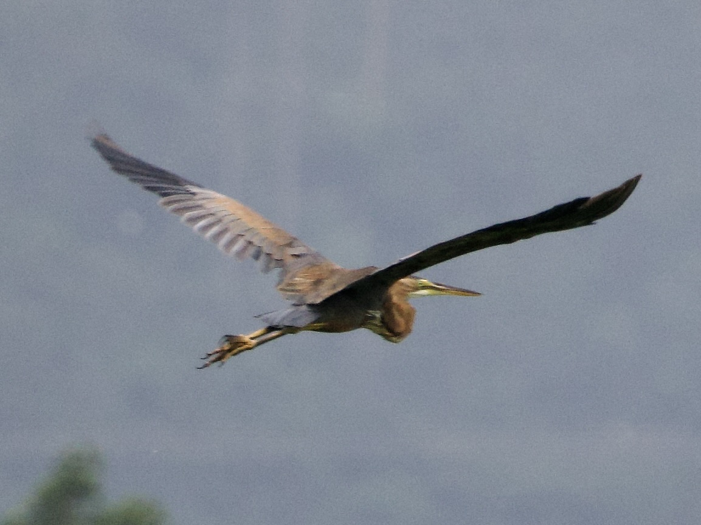

Purple Heron
Ardea purpurea
Order: Pelecaniformes
Family: Ardeidae

A large, well camouflaged heron. Has scorched brown plumage, with slate grey flight feathers, crown and tail. Only appears purple under some lighting conditions. On a cloudy day, its colours lie on the gradient #C27726 #9F642A #7C522F #583F33 #352C37. Under a strong orange-red light, such as at dusk, it becomes #DC4C19 #C14320 #A63B27 #8B322D #702934, which seems purple but is actually more of wine red.